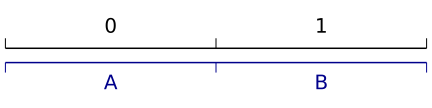

The topic of arithmetic coding is probably as good an introduction to information theory as we are going to get. The notions required to understand it cover all the basics and its embodiment of the source coding theorem makes it a useful building block for understanding information and further concepts.
Here is my take on an explanation.
Symbol-by-symbol Coding
The problem at hand is that of converting a sequence of symbols between two alphabets. In practice, however, we only consider binary encodings, where the target alphabet is of size 2: \(\{0,1\}\), but everything presented here will equally apply to alphabets of larger sizes (e.g. 10: \(\{0,1,2,3,4,5,6,7,8,9\}\)) with respective changes of base from 2 (to e.g. 10).
Block Coding
If the source and target alphabets are of the same size, the conversion can be made trivially by assigning a single target symbol to each source symbol:

So a sequence \(ABA\) would encode into \('010'\) and vice versa for decoding.
Larger alphabets require assigning longer codes to each symbol. For a source alphabet of 4 symbols:
each letter is assigned a 2-bit code. The same sequence \(ABA\) would encode into \('00~01~00'\).
Notice that, for alphabet sizes that are powers of 2, the length of individual symbol codes is the \(\log_2\) of the size. So 3-bit codes are sufficient to support an alphabet of 8 symbols:
the same sequence \(ABA\) would encode into \('000~001~000'\).
If the size of the alphabet is not a power of 2, there are codes that aren’t assigned any symbol. For example, an alphabet of 26 symbols:

This may be satisfactory for certain applications. If one has the added constrait of prefering short (i.e. compressed) encodings, there are ways of making more efficient use of the code-space.
Variable Length Coding
Consider assigning this extra space to symbols in a way that shrinks the length of their assigned codes: if we assign both 5-bit codes \('00000'\) and \('00001'\) to symbol \(A\), the last bit isn’t helping distinguish between symbols anymore and can be dropped, leaving us with the 4-bit code \('0000'\).
Further, if not all symbols are equally likely to be sampled, we can preferentially absorb this extra code-space into symbols that are most likely to occur, maximizing efficiency. For example, in English text, letters \(\{A,E,I,N,O,T\}\) usually occur more than others so assigning more code-space to these symbols will result in shorter binary encodings in the long run:
Symbols being assigned 5-bits are effectively given \(\frac{1}{32}\) of the code-space, and the more likely 4-bit symbols are given \(\frac{2}{32} = \frac{1}{16}\) of the code-space. Encoding the string \(ABA\) according to this assignment would produce \('0000~00010~0000'\).
This notion of assigning smaller codes to more common symbols and longer codes to less common symbols can be shown to produce codes of minimal length when the proportion of code-space assigned to each symbol is equal to its proportion in the message (i.e. string of symbols) to be encoded.
Huffman Coding
Given a probability distribution over symbols, Huffman’s algorithm will efficiently produce an assignments of codes to symbols which consistently minimizes the length of encodings that are sampled from that same probability distribution.
So if we consider the categorical distribution over letters as they typically appear in English text:

Huffman’s algorithm will produce a “tree” corresponding to a code assignment like so:
where each symbol is alligned to a binary slice of the code space reasonably close to its share in the distribution (unlabeled symbols, in order, are \(K,Q,X,J,Z\)). Encoding the string \(ABA\) according to this assignment would produce \('0000~111000~0000'\).
The length of individual symbol codes in this example range between 3 bits for the most frequent letters \(\{E,T\}\) to 10 bits for the least frequent \(\{J,Z\}\).
Because Huffman codes produce a fixed assignment between symbols and codes, it can only give shares of code-space that are powers of \(\frac{1}{2}\). The degree to which the Huffman tree’s distribution “reasonably” models the true distribution can be shown graphically (true in black, modeled in gray):
which consistently under- or over-shoots the share of code-space each symbol takes to align them to powers of \(\frac{1}{2}\) (e.g. \(0.125, 0.06125, 0.03215, 0.015625\), etc.)
As stated before, this assignment of codes to symbols is optimal, insofar as it is an assignment, meaning that each symbol gets its own fixed code. However, whenever the probability distribution doesn’t align exactly along powers of \(\frac{1}{2}\), we can outperform methods like Huffman by giving up this “alignment” of symbols to the code-space entirely and working directly with the true distribution.
Arithmetic Coding
Arithmetic coding is not a symbol-by-symbol coding scheme. Instead, messages are directly assigned binary expansions that are precise enough to uniquely identify them.
The same way every binary sequence corresponds to a finite interval of code-space by nesting divisions by 2 in the unit interval:
So does every sequence of symbols from our alphabet correspond to a finite interval of the unit space by nesting divisions of the space into our distribution of symbols. For example, given a distribution over two symbols \(\{A \mapsto 0.67, B \mapsto 0.33\}\):
To arithmetically encode a sequence of symbols given a distribution, it suffices to find the first binary interval that fits entirely within the interval determined by the sequence we want to encode, and vice versa for decoding.
Example 1
To encode the sequence \(ABA\) according to the above toy distribution:
We find that the code \('1000'\) uniquely determines the sequence \(ABA\) by being the first binary sequence whose interval fits entirely within the interval of the symbol sequence:
The exact way in which this mapping between the code- and symbol-space is computed will vary by implementation with different trade-offs between precision, memory requirements and types of probability distribution.
Example 2
Any more realistic example becomes challenging to demonstrate graphically.
Consider encoding the sequence of letters \(NOT\) from a 26 letter alphabet with associated probabilities. Below, message space is separated between letters in alphabetical order and each truncation of the space is highlighted in red in the previous space.
The distribution for the second symbol is nested within the interval of the first symbol:
Again, the distribution for the third symbol is nested within the interval for the first two:
We find the word \('NOT'\) to be uniquely determined by \('100100110111'\), the size of which is \(12\) bits.
Information
By nesting distributions within symbol intervals, the proportion of the unit interval taken by subsequent symbols is scaled by the width of the interval they are nested in.
Therefore, the width of any message is the product of the widths (i.e. probabilities) of its constituent symbols, which is equivalent to assigning messages probabilities equal to the probability of independently sampling each of its symbols in sequence:
\[P(\mathrm{\bf x}) = \prod_i{P(x_i)}\]
Knowing this width (i.e. probability), we know that the length of the code’s interval must be contained within, meaning the arithmetic code itself cannot be shorter than the number of times it takes to split the unit interval in half to reach that width, i.e. the logarithm base-\(\frac{1}{2}\) of the probability, i.e. the negative logarithm base-2:
\[\begin{align}\mathrm{len}(\mathrm{\bf x})_2 &~\ge~~ \log_{\frac{1}{2}}\left(\prod_i{P(x_i)}\right)\\ &~\ge -\log_2\left(\prod_i{P(x_i)}\right)\end{align}\]
Or simply:
\[\mathrm{len}(\mathrm{\bf x})_2 ~\ge -\log_2P(\mathrm{\bf x})\]
This lower-bound on the length of an encoding is precisely the definition the information of an event \(x\) with probability \(P(x)\):
\[I(x) = -\log P(x)\]
It is also the absolute theoretical lower-bound to any compression method with respect to the given distribution with probabilities \(P\).
Alongside this informational lower-bound, we can derive an upper-bound for the length of an arithmetic encoding. Consider the level of binary divisions immediately smaller than the width of the message (we round the logarithm up to the next integer):
\[\mathrm{len}(\mathrm{\bf x})_2 ~\ge~ \left\lceil-\log_2P(\mathrm{\bf x})\right\rceil\]
Notice that, although it is possible that no binary interval immediately smaller than the message’s interval fits within it if intervals are not in perfect phase with each other (as in one of the examples above):
Subdividing the space only once more is guaranteed to produce a binary interval within the message interval. Since the arithmetic encoding is defined as the first binary interval fully within the message’s interval, we have the upper-bound:
\[\mathrm{len}(\mathrm{\bf x})_2 ~\le~ \left\lceil-\log_2P(\mathrm{\bf x})\right\rceil + 1\]
which makes an arithmetic encoding at most 1-bit longer than the minimum it (and any other algorithm) can possibly achieve.
EOM
A caveat to the above calculations is that for some distributions, namely if the probability of some symbols in the distribution is more than \(\left(\frac{1}{2}\right)\), then individual bits can fail to discriminate between two successive levels of the nested symbol space.
For example, the interval of code \('00'\) is the first binary interval to be fully within the bounds of both \(AA\) and \(AAA\) using the distribution \(\{A \mapsto 0.67, B \mapsto 0.33\}\):
The usually stated workaround to this issue is to include a special end-of-message (EOM) symbol to the distribution with a probability of \(\left(\frac{1}{n}\right)\) where \(n\) is the length of the message and use it as a terminating symbol, resolving the ambiguity.
This slightly skews the distribution and incurs an overall informational cost equivalent to encoding \(n\) times \(\left(\frac{n}{n+1}\right)\) and \(\left(\frac{1}{n+1}\right)\) once:
\[\begin{align} \Delta\mathrm{len}(\mathrm{\bf x}) &= -\log\left(\left(\frac{n}{n+1}\right)^n \cdot \frac{1}{n+1}\right)\\[6pt] &= -n\log\left(\frac{n}{n+1}\right) - \log\left(\frac{1}{n+1}\right)\\[6pt] &= -n\log(n) + n\log(n+1) + \log(n+1)\\[6pt] &= (n+1)\log(n+1) - n\log n\\[6pt] \end{align}\]
Which grows on the order of \(O(\log n)\).
I find this solution unsatisfactory as either (a) the EOM symbol’s probability is not exactly \(\left(\frac{1}{n}\right)\) making the code more than \(\log n\) longer, or (b) the probability is exactly \(\left(\frac{1}{n}\right)\) in which case the decoder already knows the length of the message by way of the probability and the introduction of an EOM symbol becomes unnecessary.
The more elegant alternative is to prepend messages with a binary encoding of its length, letting the decoder know exactly where to stop the recursion. A direct binary encoding of a positive integer has a similar \(\lceil\log_2n\rceil\) bits cost but simply pre-pending this code to the message’s code makes it impossible to determine where the first code stop and the second begins.
The solution is to either dedicate a fixed length (e.g. 32- or 64-bit) number or for something more sophisticated, a universal prefix code (e.g. Elias) can be used which have an unambiguous ending (the prefix property) and also take on the order of \(O(\log n)\) bits for any \(n \in \mathbb{N}\).
Adaptive Coding
So far, distributions have been assumed to remain unchanged over the span of messages. This doesn’t have to be the case.
If instead sharing a single distribution, the encoder and decoder share a model that updates its probability distribution over symbols after each successive symbol, the likelihood of plausible messages can be increased. These more likely messages are thus addressable by shorter codes, increasing the achieved compression factor by however much better the adaptive model is able to predict symbols than the fixed distribution.
With adaptive arithmetic coding, details about different compression techniques can be largely omitted, leaving only the predictive power of underlying models (i.e. expected likelihood of messages) to be discussed, which, in turn, is much more amenable to analysis.